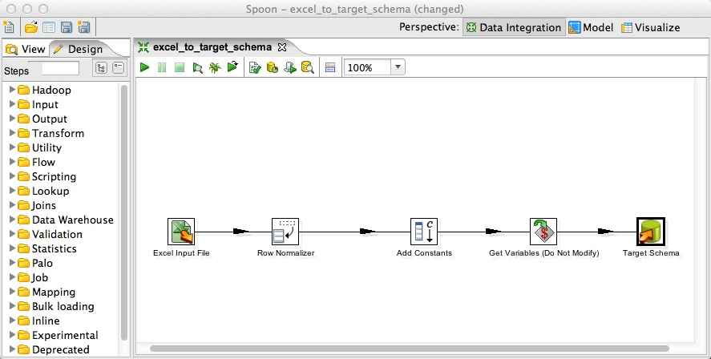
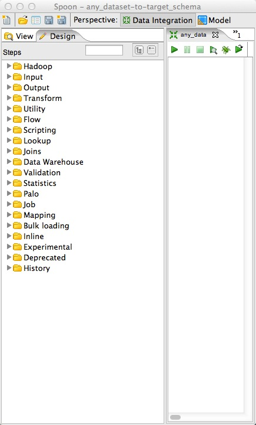

Create New Wrapper - Download Transformation Template
- Download one of the following by right-clicking the link and "Saving As":
Excel Source
- For this tutorial, we will be using the Excel Source, so download that one now
SQL Source
- Use if your source is a SQL database
Other Source
- Use this if you have any other data source supported by Spoon
- Click File -> Open, then select the Transformation Template you just downloaded.

- Other Spoon Input Sources you might be able to use:
